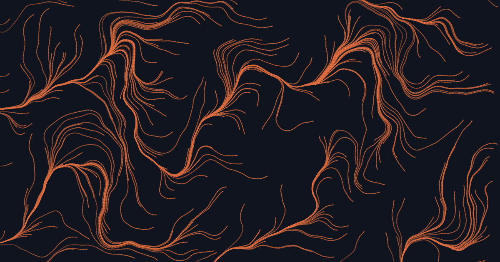
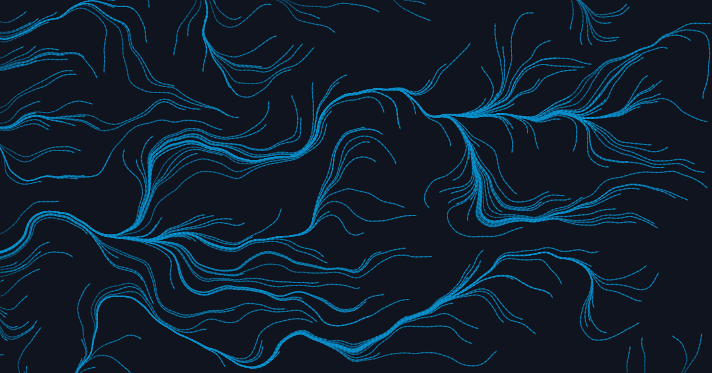
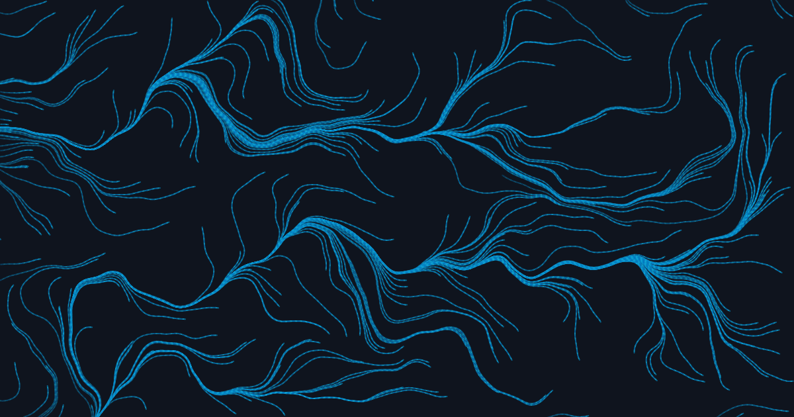
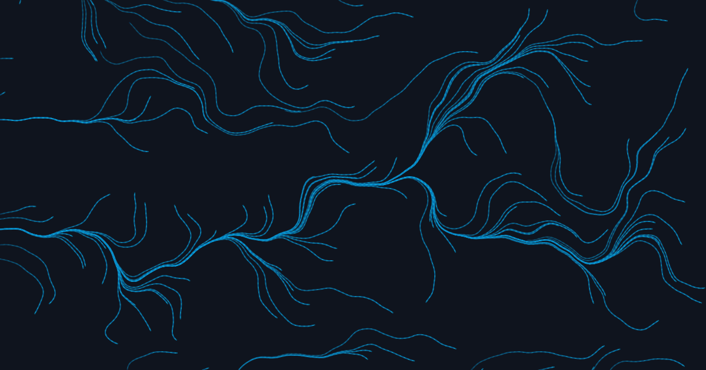

11 · Apr 2, 2026
What is ethics?
And why do most conversations about it collapse before they begin?
Topic
Essays on what we owe the systems we build, and what they owe the people who live with them. Five pieces so far.

11 · Apr 2, 2026
And why do most conversations about it collapse before they begin?

07 · Nov 14, 2025
What an LLM doesn't say is often more revealing than what it does.

06 · Sep 3, 2025
On the asymmetry of being read by a system you cannot read.
05 · Jul 22, 2025
The ordinary, cumulative ways a machine can disappoint a person.

04 · May 6, 2025
Every request to a model is a tiny agreement — usually unsigned.